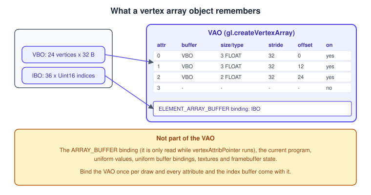
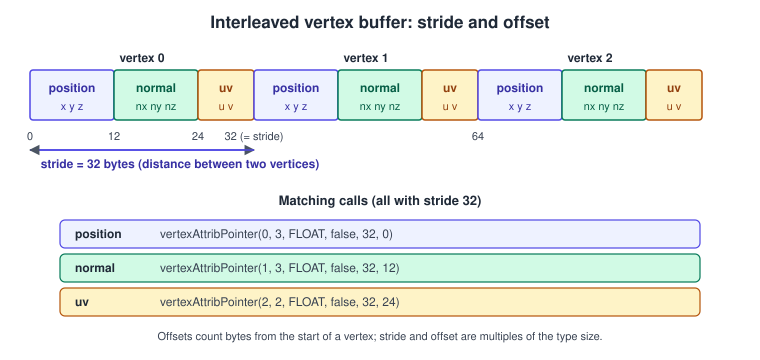
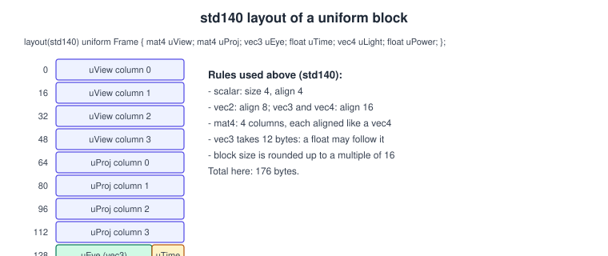
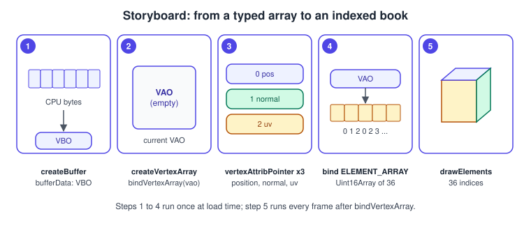

Buffers, Attributes, Uniforms and VAOs
|
This content was generated with the assistance of AI and should be verified against the official documentation before being relied on in production. |
Every WebGL program is, at heart, a data-delivery problem. The GPU runs your shaders, but it only knows what you copy into buffer objects, bind to attribute slots, set as uniforms or place in uniform blocks. This page covers those four channels and the object that remembers the first of them, the vertex array object (VAO): how bytes in a JavaScript typed array become per-vertex shader inputs, how per-draw values travel as uniforms, how a whole group of values is shared by many programs through a uniform buffer object (UBO), and which rules (alignment, padding, limits, state) decide whether it works.
The facts were checked in November 2026 against the WebGL 2.0 specification (editor’s draft of 2026-06-30), the MDN WebGL
reference and the OpenGL ES 3.0 specification that WebGL 2 is based on. The documented API is WebGL 2.0 (GLSL ES 3.00,
#version 300 es), which every evergreen browser supports (about 97 % of global usage on caniuse); the places where WebGL 1.0
differs are called out, because WebGL 1 code is still common in older tutorials and libraries. The code needs a browser, a
local web server or a bundler (ES modules do not load from file://), and the small matrix library glMatrix
(gl-matrix 3.4.4 at the time of writing) for the example; the matrix maths itself is the subject of
Transforms and Cameras.
In the Bookshelf running example this page sits between the first triangle (First Triangle in WebGL 2) and the textured, lit book. It replaces the single hard-coded triangle by an indexed box with positions, normals and texture coordinates, and it introduces the uniform block that will carry the camera and the desk lamp to every later shader. The same ideas in desktop OpenGL are in Buffers and Vertex Specification and Uniforms, UBOs and SSBOs; WebGL has no SSBOs, no mapped buffers and no direct state access, which is why this page is shorter than those. The vocabulary of meshes is in Meshes and Vertex Data.
The big picture

Data reaches shaders by four routes, each with its own API and lifetime:
| Route | Typical content | Changes how often | Shader declaration (GLSL ES 3.00) |
|---|---|---|---|
Attributes read from buffers |
positions, normals, texture coordinates, tangents, colours, bone indices |
per vertex (rarely rewritten) |
|
Uniforms set one by one |
model matrix, tint colour, time, texture unit numbers |
per draw call or per frame |
|
Uniform blocks backed by a UBO |
camera matrices, lights, material tables |
per frame, shared by many programs |
|
Textures and samplers |
images and lookup tables |
per material |
|
Three kinds of JavaScript-side object cooperate for the first route: the typed array holds the bytes on the CPU, the buffer
object (WebGLBuffer) holds them in GPU-accessible memory and knows nothing about their meaning, and the vertex array object
(WebGLVertexArrayObject) is the table that says which buffer feeds which attribute and how to read it.
Typed arrays: the CPU side
WebGL reads memory through JavaScript typed arrays (Float32Array, Uint16Array, Uint32Array, Int8Array and so on), which are
views on an ArrayBuffer. A plain Array of numbers cannot be uploaded, and the element type decides the byte layout: a
Float32Array of 24 numbers is 96 bytes of 32-bit IEEE floats in the platform’s byte order (little-endian on every platform
that runs WebGL in practice). Three details matter again and again:
-
The unit of everything in the buffer API is the byte, while the length of a typed array is in elements. A
Float32Arrayof 8 elements hasbyteLength32;vertexAttribPointeroffsets and strides are in bytes. -
subarraycreates a new view on the same memory (no copy, but an allocation);slicecopies. Creating views every frame produces garbage; reuse one scratch array. -
A view may start in the middle of an
ArrayBuffer(new Float32Array(buffer, byteOffset, length)), andbyteOffsetmust be a multiple of the element size. This is how oneArrayBuffercarries both the interleaved floats and the packed integers of a single vertex, as shown later.
Buffer objects
A buffer is created with createBuffer(), bound to a target with bindBuffer(target, buffer) and filled with bufferData.
The target tells WebGL how the bound buffer will be used; every bufferData and bufferSubData call acts on whatever buffer is
bound to the target you name, which is the classic source of "my data went into the wrong buffer" mistakes.
| Target | Meaning | Version |
|---|---|---|
|
vertex attribute data (read by |
1 and 2 |
|
vertex indices for |
1 and 2 |
|
storage for uniform blocks |
2 |
|
captured vertex shader outputs |
2 |
|
neutral targets for |
2 |
|
asynchronous pixel readback and texture upload from a buffer |
2 |
WebGL 1 ties a buffer to the first target it is bound to; WebGL 2 relaxes this, so a buffer can in principle be written as a vertex buffer and later read as a uniform buffer, but keeping one buffer per purpose is simpler and avoids driver re-validation. Transform feedback has remaining restrictions that are covered in WebGL 2 Advanced Features.
bufferData and bufferSubData
const vbo = gl.createBuffer();
gl.bindBuffer(gl.ARRAY_BUFFER, vbo);
// 1. Allocate and upload in one call.
gl.bufferData(gl.ARRAY_BUFFER, vertices /* Float32Array */, gl.STATIC_DRAW);
// 2. Allocate only (contents undefined until written).
gl.bufferData(gl.ARRAY_BUFFER, 1024 * 1024, gl.DYNAMIC_DRAW);
// 3. Overwrite part of an existing allocation, in place.
gl.bufferSubData(gl.ARRAY_BUFFER, /* dstByteOffset */ 256, patch /* Float32Array */);
// 4. WebGL 2 only: read a sub-range of the source without creating a subarray view.
gl.bufferSubData(gl.ARRAY_BUFFER, 256, bigArray, /* srcOffset (elements) */ 64, /* length (elements) */ 32);bufferData reallocates the buffer’s storage and replaces its size, usage and contents. bufferSubData only writes into
existing storage: it cannot grow the buffer, and writing past the end raises INVALID_VALUE. The WebGL 2 overloads take
srcOffset and length in elements of the source array, which avoids creating subarray views just to upload a slice. There is
no way to map a buffer into JavaScript memory (OpenGL’s glMapBuffer is not exposed), so every update is a copy from a typed
array.
Usage hints
The last argument of bufferData is a hint about how often the data changes and who touches it. It does not restrict anything
(you can still call bufferSubData on a STATIC_DRAW buffer); the browser and driver use it to pick a memory pool.
| Hint | Meaning | Bookshelf example |
|---|---|---|
|
written once, drawn many times |
the book mesh, the shelf boards |
|
rewritten occasionally, drawn many times |
the uniform block with the camera, updated once per frame; per-instance book positions |
|
written once, drawn only a few times |
per-frame debug lines or a particle burst |
|
written by the GPU (for example by transform feedback) and read by the CPU (WebGL 2) |
reading back a picking result |
|
written by the GPU and consumed by the GPU (WebGL 2) |
transform feedback output used as a vertex buffer |
Copy and read back
WebGL 2 adds copyBufferSubData(readTarget, writeTarget, readOffset, writeOffset, size), a GPU-side copy between two bound
buffers (bind the source to COPY_READ_BUFFER and the destination to COPY_WRITE_BUFFER, so no real binding is disturbed), and
getBufferSubData(target, srcByteOffset, dstBuffer, dstOffset, length), which copies buffer contents back into a typed array.
The second one waits for the GPU to finish everything that touches the buffer, so calling it in the middle of a frame stalls
the pipeline; the asynchronous pattern is a fence (fenceSync, polled with clientWaitSync with a zero timeout) followed by
getBufferSubData when the fence has signalled, and it is described in
Performance and Debugging.
Lifetime
deleteBuffer frees the object once nothing refers to it. A buffer that is still referenced by a VAO or a draw in flight lives
on until those references go away. WebGL objects are garbage collected when JavaScript drops the last reference, but GPU memory
use is invisible to the garbage collector, so release explicit resources (deleteBuffer, deleteVertexArray) when a mesh is
discarded. All buffers disappear with the context when it is lost, which is covered in
Context Loss and Robustness.
Attributes: describing the layout
An attribute is a per-vertex input of the vertex shader. Its value for vertex number i is read from a buffer, using a
description that you set with vertexAttribPointer while the buffer is bound to ARRAY_BUFFER.
gl.vertexAttribPointer(index, size, type, normalized, stride, offset);
gl.enableVertexAttribArray(index);| Parameter | Meaning | Rules and common values |
|---|---|---|
|
attribute number (the |
|
|
components per vertex |
1, 2, 3 or 4. A shader |
|
component type in the buffer |
|
|
how integers become floats |
|
|
bytes from the start of one vertex to the start of the next |
|
|
bytes from the start of the buffer (or of the vertex, in an interleaved layout) to this attribute |
a multiple of the component size |
Two facts surprise people. First, vertexAttribPointer captures the buffer that is bound to ARRAY_BUFFER at the moment of the
call and stores it, together with the format, in the current VAO; binding a different buffer afterwards changes nothing about
the attribute. Second, an attribute stays unused until enableVertexAttribArray(index) is called. A disabled array supplies a
single constant value instead, set with vertexAttrib4f (or vertexAttrib1f, 2f, 3f and the fv variants); the default
constant is (0, 0, 0, 1). A constant attribute is handy for a colour that is the same for the whole mesh without storing it per
vertex. The browser emulates a disabled attribute 0 internally, which is slower than a real array, so keep attribute 0 enabled
and assign location 0 to the position.
Integer attributes
A shader input declared in ivec4 or in uvec2 (bone indices, material ids, packed flags) must be fed with
vertexAttribIPointer(index, size, type, stride, offset), which takes no normalized argument and accepts only the integer
types (BYTE, UNSIGNED_BYTE, SHORT, UNSIGNED_SHORT, INT, UNSIGNED_INT). The function family has to match the shader
declaration: feeding an integer shader input through vertexAttribPointer (or a float input through
vertexAttribIPointer) does not convert the values, and WebGL 2 reports INVALID_OPERATION at draw time when the types
disagree.
Locations: layout, bindAttribLocation and getAttribLocation
In GLSL ES 3.00 you choose the number in the shader with layout(location = N) and use the same number in JavaScript, which is
the approach used in this section. GLSL ES 1.00 has no such qualifier: call gl.bindAttribLocation(program, index, 'aPosition')
before linkProgram, or ask the linker with gl.getAttribLocation(program, 'aPosition') after it, which returns -1 for an
attribute that is missing or optimised away. A mat4 attribute occupies four consecutive locations (one per column) and has to be
set up as four vec4 pointers; an array of n attributes takes n locations. Exceeding MAX_VERTEX_ATTRIBS makes the program
fail to link.
Interleaving, stride and offset

Attribute data can be stored in separate buffers (one for positions, one for normals, one for uvs), in one buffer with the attributes one after the other (planar: all positions, then all normals), or interleaved, with all attributes of one vertex next to each other. Interleaved is the usual choice for static meshes: one vertex fetch touches one or two cache lines instead of one per attribute. Planar or separate buffers win when one attribute changes every frame (animated positions with static uvs), because only that buffer is rewritten.
For the book box the layout is three floats of position, three of normal and two of texture coordinates: 8 floats, 32 bytes per
vertex. stride is 32 for every attribute; offset is 0, 12 and 24. Compute them from the component sizes rather than writing
numbers, so that adding a tangent later is a one-line change:
const FLOAT_BYTES = Float32Array.BYTES_PER_ELEMENT; // 4
const layout = [
{ location: 0, size: 3 }, // position
{ location: 1, size: 3 }, // normal
{ location: 2, size: 2 }, // uv
];
const stride = layout.reduce((sum, a) => sum + a.size, 0) * FLOAT_BYTES; // 32
let offset = 0;
for (const a of layout) {
gl.vertexAttribPointer(a.location, a.size, gl.FLOAT, false, stride, offset);
gl.enableVertexAttribArray(a.location);
offset += a.size * FLOAT_BYTES;
}Source: MDN: Data in WebGL
Smaller vertices
Bandwidth and memory are often the limit for large scenes, and WebGL 2 allows compact formats. The layout below stores the same book vertex in 20 bytes instead of 32:
| Attribute | Format | Bytes | Call |
|---|---|---|---|
position |
3 |
12 |
|
normal |
|
4 |
|
uv |
2 |
4 |
|
The offsets and the stride are multiples of 4 because the largest component is 4 bytes wide; a stride that is not a multiple of
the component size raises INVALID_OPERATION. Reading a vec3 aNormal from a four-component attribute simply drops the
fourth component. The cost is conversion code on the CPU (the packed normal is built with integer arithmetic on a Uint32Array
view of the same ArrayBuffer), which is only worth it for large meshes. HALF_FLOAT needs a 16-bit encoding that JavaScript
does not provide natively in all environments, so encode through a small helper library or the DataView setFloat16 method where
the browsers you target support it.
Index buffers
An index buffer stores vertex numbers, so shared corners are stored once. The box has 8 corners but needs 24 vertices (each
corner is shared by three faces that need different normals and uvs), and its 6 faces are 12 triangles = 36 indices. The
indices live in a buffer bound to ELEMENT_ARRAY_BUFFER, and the draw call reads them:
gl.bufferData(gl.ELEMENT_ARRAY_BUFFER, new Uint16Array(indices), gl.STATIC_DRAW);
gl.drawElements(gl.TRIANGLES, 36, gl.UNSIGNED_SHORT, 0); // mode, count, index type, byte offset| Index type | Range | Notes |
|---|---|---|
|
0 to 255 |
tiny meshes only; some GPUs convert it internally |
|
0 to 65 535 |
default choice, half the memory of 32-bit indices |
|
0 to about 4.29 billion |
core in WebGL 2; in WebGL 1 it needs the |
The offset argument of drawElements is in bytes and must be a multiple of the index size. WebGL 2 also provides
drawRangeElements(mode, start, end, count, type, offset), whose start and end give the smallest and largest index used, a hint that
lets a driver prefetch a range of vertices. In WebGL 2 primitive restart is always enabled with the fixed index value (the
maximum of the index type, 65 535 for UNSIGNED_SHORT): that index ends a strip or fan and starts a new one, which is useful for
TRIANGLE_STRIP meshes and LINE_STRIP paths in a single draw call, and a hazard if a real vertex happens to have that index.
drawArrays skips the index buffer when the vertices are already in drawing order.
Uniforms
A uniform is a read-only value that is the same for every vertex and fragment of one draw call. Its location is a
WebGLUniformLocation object obtained after linking.
gl.useProgram(program); // uniforms are set on the CURRENT program
const uModel = gl.getUniformLocation(program, 'uModel'); // null if absent or optimised out
gl.uniformMatrix4fv(uModel, false, modelMatrix); // location, transpose (false), Float32Array(16)
gl.uniform3f(gl.getUniformLocation(program, 'uColor'), 0.55, 0.12, 0.10);| Shader type | JavaScript call | Notes |
|---|---|---|
|
|
the |
|
|
a |
|
|
|
|
|
|
|
|
the second argument |
|
|
only in WebGL 2 |
Arrays and structures are addressed by name: for uniform vec3 uTint[4]; the location of element 2 is
getUniformLocation(program, 'uTint[2]'), and getUniformLocation(program, 'uTint') (or 'uTint[0]') addresses the first element, so a
single uniform3fv(loc, new Float32Array(12)) sets all four. A structure member is addressed like 'uLights[1].colour'. The call
returns null for an inactive uniform, and calling a uniform* function with a null location is silently ignored, so a typo
shows up as "nothing changes" rather than as an error. Use getProgramParameter(program, gl.ACTIVE_UNIFORMS) with
getActiveUniform(program, i) to list the names and types that are really active.
Uniform values belong to the program object, not to the context: each program keeps its own values, the initial value is zero,
and they survive useProgram switches. Therefore you can set rarely changing uniforms once after linking and only update the
ones that change each draw. Locations stay valid until the program is linked again; cache them in an object next to the program
instead of calling getUniformLocation per frame. Individual uniform* calls are cheap, but a scene with hundreds of draws and
a dozen uniforms each spends noticeable time crossing the JavaScript-to-driver boundary, which is one motivation for uniform
buffers. The uniformMatrix4fv upload of a Float32Array copies 64 bytes; passing a plain Array additionally makes the browser
convert it, so keep matrices in Float32Array (glMatrix does).
Uniform buffer objects
WebGL 2 (OpenGL ES 3.0) lets a group of uniforms live in a uniform block, whose storage is a buffer object. Several programs can read the same block, so a camera that is uploaded once per frame serves the shelf, the books, the floor and the particles, and switching programs does not require re-setting those uniforms.
layout(std140) uniform Frame {
mat4 uView;
mat4 uProj;
vec3 uEye;
float uTime;
vec4 uLight; // xyz = direction towards the lamp, w unused
float uPower;
};On the JavaScript side, three links connect the block to the buffer: the program’s block is assigned a binding point
(uniformBlockBinding), the buffer is attached to the same binding point (bindBufferBase or bindBufferRange), and the
buffer contains the bytes in the layout the block expects.
const blockIndex = gl.getUniformBlockIndex(program, 'Frame'); // gl.INVALID_INDEX if missing
const blockSize = gl.getActiveUniformBlockParameter(program, blockIndex, gl.UNIFORM_BLOCK_DATA_SIZE); // 176
gl.uniformBlockBinding(program, blockIndex, 0); // block -> binding point 0
const ubo = gl.createBuffer();
gl.bindBuffer(gl.UNIFORM_BUFFER, ubo);
gl.bufferData(gl.UNIFORM_BUFFER, blockSize, gl.DYNAMIC_DRAW);
gl.bindBufferBase(gl.UNIFORM_BUFFER, 0, ubo); // binding point 0 -> uboThe std140 layout

layout(std140) fixes the memory layout of the block so that JavaScript can compute it without asking the driver. The rules
come from the OpenGL ES 3.0 specification (the "Standard Uniform Block Layout" rules); WebGL 2 adopts them unchanged.
They are the part of UBOs that people get wrong, and the figure above shows the example block.
| Type in the block | Base alignment (bytes) | Size (bytes) | Remark |
|---|---|---|---|
|
4 |
4 |
|
|
8 |
8 |
|
|
16 |
12 |
the next member may start 12 bytes after the |
|
16 |
16 |
|
|
16 |
|
every array element is rounded up to a |
|
16 |
32 |
stored as an array of 2 columns of |
|
16 |
48 |
three columns of |
|
16 |
64 |
four columns of |
|
16 |
rounded to a multiple of 16 |
members laid out recursively; the struct starts at a multiple of 16 |
The block size is the end of the last member, rounded up to a multiple of 16. Rather than trusting a hand calculation, ask the driver once and compare:
const names = ['uView', 'uProj', 'uEye', 'uTime', 'uLight', 'uPower'];
const indices = gl.getUniformIndices(program, names);
const offsets = gl.getActiveUniforms(program, indices, gl.UNIFORM_OFFSET);
console.table(Object.fromEntries(names.map((n, i) => [n, offsets[i]])));
// uView 0, uProj 64, uEye 128, uTime 140, uLight 144, uPower 160 (block size 176)Members of a block without an instance name are addressed by their plain name (uView), as in the shader above; a block with an
instance name (uniform Frame { ... } frame;) is used as frame.uView in GLSL and looked up as Frame.uView in the query
functions. Always request std140 explicitly: the default shared layout is implementation-defined and the only way to learn it
is the query above.
Binding points, ranges and limits
A binding point is a global slot (0 to MAX_UNIFORM_BUFFER_BINDINGS - 1) in the context. Choose a convention and keep it: for
example binding 0 is the per-frame block, 1 the per-material block and 2 the per-object block, and every program calls
uniformBlockBinding for the blocks it declares. bindBufferBase(UNIFORM_BUFFER, point, buffer) attaches the whole buffer;
bindBufferRange(UNIFORM_BUFFER, point, buffer, offset, size) attaches a window of it, which lets one large buffer hold many
per-object blocks and a draw loop select each by changing only the offset:
const align = gl.getParameter(gl.UNIFORM_BUFFER_OFFSET_ALIGNMENT); // often 256, at most 256
const stride = Math.ceil(64 / align) * align; // one mat4 per object, padded
// for each object i:
gl.bindBufferRange(gl.UNIFORM_BUFFER, 2, objectsUbo, i * stride, 64);Limit (gl.getParameter) |
Guaranteed minimum | Meaning |
|---|---|---|
|
24 |
binding points per context |
|
16 384 bytes |
largest block; many GPUs allow far more, so query it |
|
12 each |
blocks per stage |
|
24 |
blocks per program |
|
at most 256 |
the offset passed to |
|
256 and 224 (128 and 16 in WebGL 1) |
loose uniforms, counted in |
The minimums are those of OpenGL ES 3.0, as adopted by WebGL 2. They are what you can rely on everywhere; always read the real
values from getParameter and design to the minimum if the scene must run on phones.
Updating a block
Write the bytes into a Float32Array (or an ArrayBuffer with several views if the block mixes integers and floats) at the byte
offsets from the table, and upload with bufferSubData. Writing the same array every frame costs one copy and no allocation:
const frame = new Float32Array(176 / 4); // 44 floats
frame.set(view, 0); // mat4 at byte 0
frame.set(proj, 16); // mat4 at byte 64
frame.set(eye, 32); // vec3 at byte 128
frame[35] = timeSeconds; // float at byte 140, packed right after the vec3
frame.set(lightDir, 36); // vec4 at byte 144 (w unused)
frame[40] = 1.2; // float at byte 160
gl.bindBuffer(gl.UNIFORM_BUFFER, ubo);
gl.bufferSubData(gl.UNIFORM_BUFFER, 0, frame);A mismatch between block declarations in two shaders that share a block (the vertex and the fragment shader of one program, or two programs using the same binding) is a link error for the first case and silently wrong data for the second, so keep the block text in a single JavaScript string and insert it into every shader with a template literal.
Vertex array objects
A vertex array object stores the complete input description of one mesh: for each attribute index its enabled flag, the buffer,
size, type, normalized, stride, offset, integer-ness and vertexAttribDivisor, plus the ELEMENT_ARRAY_BUFFER
binding. After setting this up once, drawing the mesh is bindVertexArray(vao) followed by a draw call, instead of a dozen
bind and pointer calls.
const vao = gl.createVertexArray();
gl.bindVertexArray(vao);
gl.bindBuffer(gl.ARRAY_BUFFER, vbo); // read by the next three calls
gl.vertexAttribPointer(0, 3, gl.FLOAT, false, 32, 0);
gl.vertexAttribPointer(1, 3, gl.FLOAT, false, 32, 12);
gl.vertexAttribPointer(2, 2, gl.FLOAT, false, 32, 24);
gl.enableVertexAttribArray(0);
gl.enableVertexAttribArray(1);
gl.enableVertexAttribArray(2);
gl.bindBuffer(gl.ELEMENT_ARRAY_BUFFER, ibo); // stored INSIDE the VAO
gl.bindVertexArray(null); // protect it from accidental changes
// ... later, every frame:
gl.bindVertexArray(vao);
gl.drawElements(gl.TRIANGLES, 36, gl.UNSIGNED_SHORT, 0);What is not in a VAO is as important as what is (see the first figure): the ARRAY_BUFFER binding is not saved (only the
buffers captured by vertexAttribPointer are), the current program, the uniform values, the uniform buffer bindings, textures
and the framebuffer are not either. Common traps:
-
Calling
bindBuffer(gl.ELEMENT_ARRAY_BUFFER, null)while a VAO is bound detaches the index buffer from that VAO. Unbind the VAO first (or never unbind element buffers). -
Calling
bindBuffer(gl.ELEMENT_ARRAY_BUFFER, ibo)when no VAO is bound changes the default VAO, which exists in WebGL (unlike core-profile desktop OpenGL), so a laterdrawElementsappears to work for one mesh and silently reads the wrong indices for another. -
Changing
vbocontents withbufferSubDatais fine and visible through the VAO; recreating the buffer withcreateBuffermeans the VAO must be set up again. -
deleteBufferon a buffer that a VAO still references does not free its storage until that VAO is deleted or reconfigured, so deleting a mesh means deleting its VAO and its buffers together.
WebGL 1 and the VAO extension
WebGL 1 has no VAOs in its core. The OES_vertex_array_object extension adds them as methods of the extension object, and
OES_element_index_uint adds 32-bit indices:
const vaoExt = gl.getExtension('OES_vertex_array_object'); // null when unsupported
const vao = vaoExt.createVertexArrayOES();
vaoExt.bindVertexArrayOES(vao);
// ... same vertexAttribPointer and enableVertexAttribArray calls ...
vaoExt.bindVertexArrayOES(null);Source: MDN: OES_vertex_array_object
The extension is widely available and WebGL 2 includes the feature in its core, so
getContext('webgl2') with a fallback is simpler than extension probing; see
WebGL Versions and Browser Support and
Extensions.
Instanced attributes, a first look
An attribute normally advances once per vertex. vertexAttribDivisor(index, 1) makes it advance once per instance, so a second
buffer of positions can place many copies of the same book mesh with one draw call:
// per-instance world position of each of 9 books, 3 floats each
gl.bindBuffer(gl.ARRAY_BUFFER, instanceVbo);
gl.vertexAttribPointer(3, 3, gl.FLOAT, false, 12, 0);
gl.enableVertexAttribArray(3);
gl.vertexAttribDivisor(3, 1); // stored in the VAO
gl.drawElementsInstanced(gl.TRIANGLES, 36, gl.UNSIGNED_SHORT, 0, 9);The divisor is part of the VAO state. The full instanced shelf, with gl_InstanceID and a matrix per instance, is in
WebGL 2 Advanced Features; WebGL 1 gets the same feature from the
ANGLE_instanced_arrays extension.
A complete example: an indexed, interleaved book box
The page below draws three coloured book boxes, rotating slowly, from one interleaved VBO, one index buffer, one VAO and a
Frame uniform block. It is a single HTML file that loads glMatrix from a CDN through an import map. It needs a local server
(npx serve or python3 -m http.server) because of the ES module.
<!doctype html>
<html lang="en">
<head>
<meta charset="utf-8">
<title>Bookshelf: buffers, attributes, uniforms, VAO</title>
<style>html, body { margin: 0; height: 100%; background: #1b1b22 } canvas { width: 100%; height: 100%; display: block }</style>
<script type="importmap">
{ "imports": { "gl-matrix": "https://cdn.jsdelivr.net/npm/gl-matrix@3.4.4/+esm" } }
</script>
</head>
<body>
<canvas id="c"></canvas>
<script type="module">
import { mat4, vec3 } from 'gl-matrix';
const canvas = document.getElementById('c');
const gl = canvas.getContext('webgl2');
if (!gl) throw new Error('WebGL 2 is not available in this browser');
// ---- 1. Shaders (the Frame block text is shared by both stages) ----
const FRAME_BLOCK = `
layout(std140) uniform Frame {
mat4 uView;
mat4 uProj;
vec3 uEye;
float uTime;
vec4 uLight;
float uPower;
};`;
const vsSource = `#version 300 es
layout(location = 0) in vec3 aPosition;
layout(location = 1) in vec3 aNormal;
layout(location = 2) in vec2 aUv;
${FRAME_BLOCK}
uniform mat4 uModel;
out vec3 vNormal;
out vec3 vWorld;
out vec2 vUv;
void main() {
vec4 world = uModel * vec4(aPosition, 1.0);
vWorld = world.xyz;
vNormal = mat3(uModel) * aNormal; // fine for rotations and uniform scale
vUv = aUv;
gl_Position = uProj * uView * world;
}`;
const fsSource = `#version 300 es
precision highp float;
${FRAME_BLOCK}
uniform vec3 uColor;
in vec3 vNormal;
in vec3 vWorld;
in vec2 vUv;
out vec4 fragColor;
void main() {
vec3 n = normalize(vNormal);
vec3 toLight = normalize(uLight.xyz);
float diffuse = max(dot(n, toLight), 0.0);
vec3 toEye = normalize(uEye - vWorld);
float rim = pow(1.0 - max(dot(n, toEye), 0.0), 3.0);
float edge = step(0.04, min(min(vUv.x, 1.0 - vUv.x), min(vUv.y, 1.0 - vUv.y)));
float pulse = 0.95 + 0.05 * sin(uTime * 2.0);
vec3 lit = uColor * (0.25 + 0.75 * diffuse * uPower) * pulse + vec3(0.12) * rim;
fragColor = vec4(mix(vec3(0.05), lit, edge), 1.0);
}`;
function compile(type, source) {
const shader = gl.createShader(type);
gl.shaderSource(shader, source);
gl.compileShader(shader);
if (!gl.getShaderParameter(shader, gl.COMPILE_STATUS)) {
throw new Error(gl.getShaderInfoLog(shader));
}
return shader;
}
const program = gl.createProgram();
gl.attachShader(program, compile(gl.VERTEX_SHADER, vsSource));
gl.attachShader(program, compile(gl.FRAGMENT_SHADER, fsSource));
gl.linkProgram(program);
if (!gl.getProgramParameter(program, gl.LINK_STATUS)) throw new Error(gl.getProgramInfoLog(program));
// ---- 2. Geometry: a box of 24 interleaved vertices (position, normal, uv) and 36 indices ----
function makeBox(hx, hy, hz) {
// each face: normal n, axes u and v with u x v = n (counter-clockwise seen from outside)
const faces = [
{ n: [0, 0, 1], u: [1, 0, 0], v: [0, 1, 0] },
{ n: [0, 0, -1], u: [-1, 0, 0], v: [0, 1, 0] },
{ n: [1, 0, 0], u: [0, 0, -1], v: [0, 1, 0] },
{ n: [-1, 0, 0], u: [0, 0, 1], v: [0, 1, 0] },
{ n: [0, 1, 0], u: [1, 0, 0], v: [0, 0, -1] },
{ n: [0, -1, 0], u: [1, 0, 0], v: [0, 0, 1] },
];
const half = [hx, hy, hz];
const data = [];
const indices = [];
faces.forEach((f, i) => {
for (const [a, b] of [[-1, -1], [1, -1], [1, 1], [-1, 1]]) {
for (let k = 0; k < 3; k++) data.push((f.n[k] + a * f.u[k] + b * f.v[k]) * half[k]); // position
data.push(...f.n); // normal
data.push((a + 1) / 2, (b + 1) / 2); // uv
}
const o = i * 4;
indices.push(o, o + 1, o + 2, o, o + 2, o + 3);
});
return { vertices: new Float32Array(data), indices: new Uint16Array(indices) };
}
const book = makeBox(0.3, 0.45, 0.075); // roughly a paperback: 0.6 x 0.9 x 0.15
const vbo = gl.createBuffer();
gl.bindBuffer(gl.ARRAY_BUFFER, vbo);
gl.bufferData(gl.ARRAY_BUFFER, book.vertices, gl.STATIC_DRAW);
const ibo = gl.createBuffer();
// ---- 3. The VAO captures the layout and the index buffer ----
const vao = gl.createVertexArray();
gl.bindVertexArray(vao);
gl.bindBuffer(gl.ARRAY_BUFFER, vbo);
const STRIDE = 8 * Float32Array.BYTES_PER_ELEMENT; // 32 bytes
gl.vertexAttribPointer(0, 3, gl.FLOAT, false, STRIDE, 0);
gl.vertexAttribPointer(1, 3, gl.FLOAT, false, STRIDE, 12);
gl.vertexAttribPointer(2, 2, gl.FLOAT, false, STRIDE, 24);
gl.enableVertexAttribArray(0);
gl.enableVertexAttribArray(1);
gl.enableVertexAttribArray(2);
gl.bindBuffer(gl.ELEMENT_ARRAY_BUFFER, ibo); // bound while the VAO is current
gl.bufferData(gl.ELEMENT_ARRAY_BUFFER, book.indices, gl.STATIC_DRAW);
gl.bindVertexArray(null);
// ---- 4. The Frame uniform block ----
const blockIndex = gl.getUniformBlockIndex(program, 'Frame');
const blockSize = gl.getActiveUniformBlockParameter(program, blockIndex, gl.UNIFORM_BLOCK_DATA_SIZE);
console.log('Frame block size', blockSize); // 176
gl.uniformBlockBinding(program, blockIndex, 0);
const ubo = gl.createBuffer();
gl.bindBuffer(gl.UNIFORM_BUFFER, ubo);
gl.bufferData(gl.UNIFORM_BUFFER, blockSize, gl.DYNAMIC_DRAW);
gl.bindBufferBase(gl.UNIFORM_BUFFER, 0, ubo);
const frameData = new Float32Array(blockSize / 4);
const uModel = gl.getUniformLocation(program, 'uModel');
const uColor = gl.getUniformLocation(program, 'uColor');
// ---- 5. Per-frame state ----
const view = mat4.create();
const proj = mat4.create();
const model = mat4.create();
const eye = vec3.fromValues(0, 0.6, 3.2);
mat4.lookAt(view, eye, [0, 0, 0], [0, 1, 0]);
const lightDir = [0.5, 0.8, 0.6, 0];
const books = [
{ x: -0.9, color: [0.55, 0.12, 0.10], speed: 0.6 },
{ x: 0.0, color: [0.12, 0.35, 0.55], speed: 0.8 },
{ x: 0.9, color: [0.20, 0.50, 0.25], speed: 1.0 },
];
function resize() {
const dpr = window.devicePixelRatio || 1;
const w = Math.max(1, Math.round(canvas.clientWidth * dpr));
const h = Math.max(1, Math.round(canvas.clientHeight * dpr));
if (canvas.width !== w || canvas.height !== h) {
canvas.width = w;
canvas.height = h;
}
gl.viewport(0, 0, w, h);
mat4.perspective(proj, (45 * Math.PI) / 180, w / h, 0.1, 50);
}
function frame(ms) {
const t = ms / 1000;
resize();
gl.clearColor(0.106, 0.106, 0.133, 1);
gl.enable(gl.DEPTH_TEST);
gl.enable(gl.CULL_FACE);
gl.clear(gl.COLOR_BUFFER_BIT | gl.DEPTH_BUFFER_BIT);
// std140 offsets: uView 0, uProj 64, uEye 128, uTime 140, uLight 144, uPower 160
frameData.set(view, 0);
frameData.set(proj, 16);
frameData.set(eye, 32);
frameData[35] = t;
frameData.set(lightDir, 36);
frameData[40] = 1.2;
gl.bindBuffer(gl.UNIFORM_BUFFER, ubo);
gl.bufferSubData(gl.UNIFORM_BUFFER, 0, frameData);
gl.useProgram(program);
gl.bindVertexArray(vao);
for (const b of books) {
mat4.fromYRotation(model, t * b.speed);
model[12] = b.x; // translation lives in elements 12, 13, 14
gl.uniformMatrix4fv(uModel, false, model);
gl.uniform3fv(uColor, b.color);
gl.drawElements(gl.TRIANGLES, 36, gl.UNSIGNED_SHORT, 0);
}
requestAnimationFrame(frame);
}
requestAnimationFrame(frame);
</script>
</body>
</html>Source: MDN: Getting started with WebGL

Points worth noticing in the listing:
-
The index buffer is created before the VAO but bound while the VAO is current, so the VAO stores it. The same is done for the vertex buffer’s three
vertexAttribPointercalls. -
The
Frametext is defined once and inserted into both shaders, so the two declarations cannot drift apart. -
The block size and offsets come from the program (
UNIFORM_BLOCK_DATA_SIZE), and the JavaScript offsets (0, 64, 128, 140, 144, 160) are those of the figure. ThegetActiveUniformslisting shown earlier can be added to confirm them on a given browser. -
model[12] = b.xwrites the translation directly, because a column-majormat4keeps it in elements 12, 13 and 14; the following page explains why. -
Nothing is allocated inside the frame loop:
frameData,modeland the matrices are created once. -
The window is resized by the browser at layout time and
gl.viewportis re-applied each frame; a production page would listen toResizeObserverinstead (see Performance and Debugging).
Common mistakes
| Symptom | Cause | Fix |
|---|---|---|
Nothing is drawn, no error |
attribute not enabled, wrong VAO bound, |
check |
Geometry is garbled |
|
multiply by |
|
an enabled attribute reads past the end of its buffer, or a required attribute array is disabled |
compare |
Block member has the wrong value after a |
std140 padding forgotten |
use the |
Normal matrix looks sheared |
|
write three |
Index buffer disappears after setup |
|
unbind the VAO first, or do not unbind the element buffer |
Uniform change has no effect |
|
call |
|
data larger than the allocated buffer |
reallocate with |
Colours look wrong with |
|
pass |
Performance notes
-
Allocate once with
bufferData, then update withbufferSubData. CallingbufferDataevery frame for the same buffer forces a new allocation and can stall when the old one is still in use. -
Prefer one interleaved static buffer per mesh and a VAO per mesh; for dynamic data, keep the changing attribute in its own buffer.
-
Reuse typed arrays. Allocating a new
Float32Arrayper object per frame is the most common cause of garbage-collection pauses in WebGL code. -
Use
UNSIGNED_SHORTindices when a mesh has fewer than 65 536 vertices; reorder the indices for locality, which helps the GPU’s post-transform vertex cache. -
Per-frame data in a UBO replaces dozens of uniform calls per program; per-object data can use one buffer and
bindBufferRange. Writes of a few kilobytes per frame are normal; megabytes per frame are not. -
Avoid
getBufferSubData,getUniformandgetErrorin the render loop: they synchronise the CPU with the GPU or the browser’s GPU process. -
Dropping the typed array after upload frees the CPU copy; the GPU keeps its own.
-
Compact attribute formats (
UNSIGNED_BYTEcolours,INT_2_10_10_10_REVnormals,UNSIGNED_SHORTuvs) cut vertex memory and bandwidth by a third or more on large meshes.
Where older material is outdated
The WebGL 1 era books and tutorials (the buffer and shader chapters of Tony Parisi’s WebGL: Up and Running, O’Reilly, 2012) show the same buffer-and-attribute model, and most of it still works. These are the differences that matter in 2026:
| Older WebGL 1 code | Today (WebGL 2, November 2026) |
|---|---|
|
|
Attributes set up again before each draw, because no VAOs exist in the core API |
|
|
|
One |
uniform blocks with |
|
|
Only float attributes; integers converted in the shader |
|
Instancing impossible, or through |
|
|
still valid; the WebGL 2 overloads with |
No book in this list covers WebGL 2, uniform buffer objects or OffscreenCanvas; those parts derive from the official
specifications and MDN only.
References
-
WebGL 2.0 specification (Khronos): https://registry.khronos.org/webgl/specs/latest/2.0/
-
WebGL 1.0 specification (Khronos): https://registry.khronos.org/webgl/specs/latest/1.0/
-
OpenGL ES 3.0 specification (uniform block layout and limits): https://registry.khronos.org/OpenGL/specs/es/3.0/es_spec_3.0.pdf
-
OpenGL ES Shading Language 3.00 specification: https://registry.khronos.org/OpenGL/specs/es/3.0/GLSL_ES_Specification_3.00.pdf
-
MDN WebGL API: https://developer.mozilla.org/en-US/docs/Web/API/WebGL_API
-
MDN, Data in WebGL: https://developer.mozilla.org/en-US/docs/Web/API/WebGL_API/Data
-
MDN, WebGL best practices: https://developer.mozilla.org/en-US/docs/Web/API/WebGL_API/WebGL_best_practices
-
MDN, bufferData: https://developer.mozilla.org/en-US/docs/Web/API/WebGLRenderingContext/bufferData
-
MDN, vertexAttribPointer: https://developer.mozilla.org/en-US/docs/Web/API/WebGLRenderingContext/vertexAttribPointer
-
MDN, uniform: https://developer.mozilla.org/en-US/docs/Web/API/WebGLRenderingContext/uniform
-
MDN, getUniformBlockIndex: https://developer.mozilla.org/en-US/docs/Web/API/WebGL2RenderingContext/getUniformBlockIndex
-
MDN, OES_vertex_array_object: https://developer.mozilla.org/en-US/docs/Web/API/OES_vertex_array_object
-
caniuse, WebGL 2: https://caniuse.com/webgl2
-
gl-matrix documentation: https://glmatrix.net/docs/
-
Tony Parisi, WebGL: Up and Running (publisher page): https://www.oreilly.com/library/view/webgl-up-and/9781449326487/